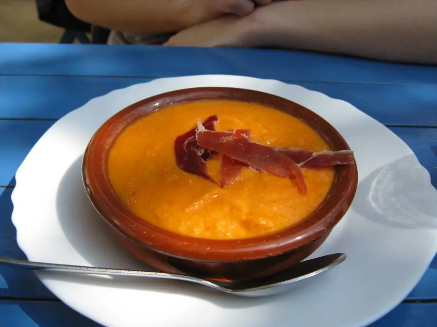
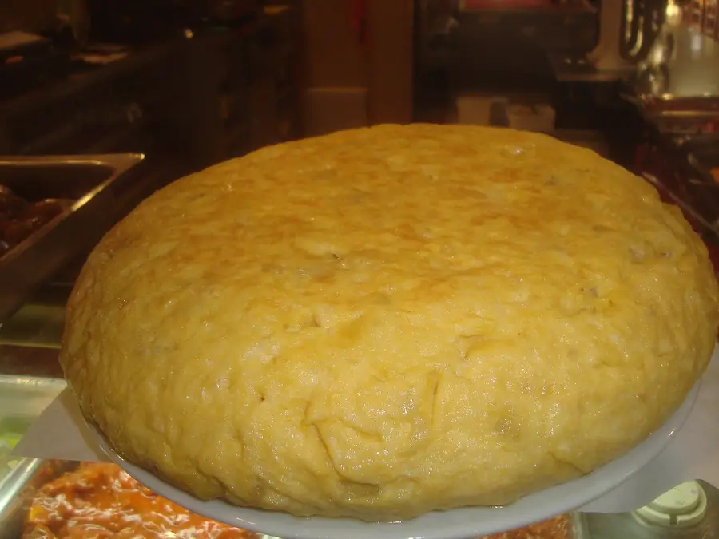
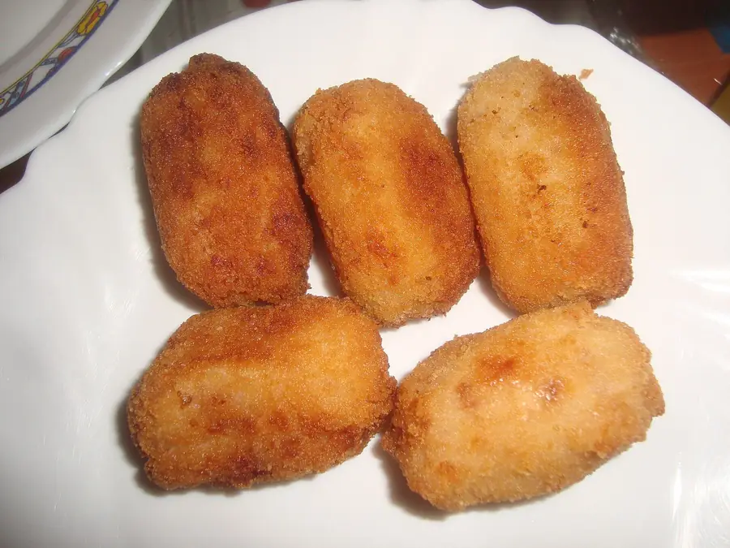
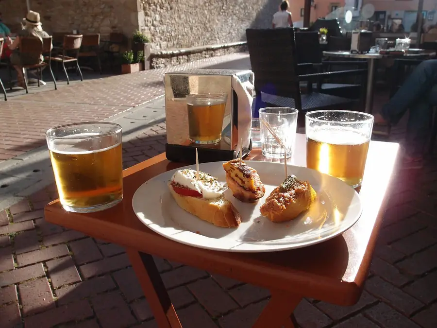

Tapas bar · Calle Carlos III, 1 · Madrid
Para tomar una cerveza, un refresco o un mojito a muy buen precio, con tapas y raciones y una terraza fantástica al lado del Palacio Real y el Teatro Real.
Cervezas · Caña, doble o jarra
- Caña
- Doble
- Jarra
Cerveza, refresco o mojito a muy buen precio. La caña de siempre, la doble o la jarra. Escoge entre toda nuestra selección y pídela tamaño tapa o ración, siempre al mejor precio.
La carta
Tapa o ración,
tú decides
Especialidades que aparecen en la web de La Paradita. La carta completa con precios está en su carta online. Abrir la carta con precios.
Para comer



Para beber

La terraza
Al lado del Palacio Real
Una terraza fantástica al lado del Palacio Real y el Teatro Real, en Calle Carlos III, 1.
¿Unas cañas?
Teléfono
Horario
Llama para el horario actual